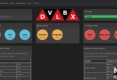

Как заказывать сайт программисту
02.05.2020#програмист#фриланс#оплатаРабота с разработчиками, советы на основе моего опыта в качестве этого самого программиста, имеющего опыт в т.ч. фриланса.
- Задача должна быть четкой, иметь количественное измерение, достижимой, иметь временные рамки (критерии SMART) Это все должно быть передано в едином наборе документов, а не разрозненно. Лучше одно большое письмо или один документ со всеми приложениями и ссылками, чем несколько частей, переданных в разное время.
- Бюджет лучше определите вы, так все переговоры пройдут быстрее. По реакции можете корректировать вверх или вниз.
- Естественно, смотрите с кем работаете – отзывы в интернете, отзывы знакомых, коллег, партнеров кто с ним уже работал. Смотрите примеры работ, попросите знающего человека оценить качество.
- Обезопасьте себя с помощью служб “Сделка без риска”, “Арбитраж сделки” и подобных – это все несложно, есть у многих платежных систем и на фриланс биржах. Также есть как самостоятельная услуга в интернете. В англоязычном интернете эта услуга называется “Escrow”, в “традиционных” сделках эта форма оплаты называется “аккредитив”. Работайте по предоплате, если уже сформировались деловые отношения, хотя все же лучше продолжать через сделку без риска.
- Сроки – закладывайте с запасом. Проблема многих программистов, особенно тех, кто работает удаленно – неправильное определение сроков. Может случиться форсмажор, можно что-то не учесть. в конце концов исполнитель может подвести и нужно будет передать кому-то другому.
-
Как нашли меня через таргетинговую рекламу в соцсетях
-

Создание lamp и mean-среды у себя дома с помощью devilbox
Похожие по теме:
- Оговорите заранее чтобы разработчик вашу работу размещал в портфолио без ваших логотипов, фирменных наименований, ссылок и т.п. Иначе в поисковые системы может попасть ненужная информация о вас и вашем бизнесе.
- Тщательно тестируйте – каждый пункт ТЗ проходите 2-3 раза. Оговорите срок претензий. Не оставляйте проверки на потом, т.к. вы можете упустить сроки претензий. Если составить перечень разногласий своевременно, программист гораздо быстрее внесет все правки пока у него все свежо в памяти.
- Скорее всего в ходе работы у вас появятся новые пожелания или ситуация может измениться. Вы можете вспомнить о чем-то важном, что не указали в ТЗ уже когда обо всем договорились. Поэтому оговорите пункт дополнительных работ. Эти доработки не должны по хорошему превышать 10% от основной работы.
- Оговорите промежуточную отчетность чтобы обезопасить себя от срыва сроков и внезапного исчезновения исполнителя. Изучите азы системы контроля версий (git, mercurial, svn и др.), либо найдите того кто сможет контроллировать процесс с помощью них.
- Оперативно отвечайте на уточняющие вопросы Исполнителя, иначе будут простои по вашей вине. Информация должна быть необходимой и достаточной. На вопрос “какой цвет элемента в ситуации, не предусмотренной ТЗ” ответ должен быть “Синий #FF0000” либо “синий, картинку прилагаю”, а не “такой же как на коробке microsoft windows 10”, “мокрый асфальт”, “черноморский прилив на рассвете в августе”.
- Ни в коем случае не давайте второй шанс тому кто уже подвел, не вникайте в его домашние личные трудности. У всех внезапно вырубает электричество, а самое мерзкое – когда разработчик говорит о смерти близких родственников. С точки зрения нормальных людей это табуированный прием, но однако я его встречаю постоянно. У одного горе-разработчика бабушка “умирала” 3 раза.
- Вы не обязаны разработчика возносить (более того – это вредно для дела), но и не относитесь к нему как к холопу. У хорошего исполнителя обычно много заказов и для него это рынок продавца. А с плохим лучше не работайте вообще.
- Счастливое число 13. После того как исполнитель приступил, постарайтесь избегать новых вводных, постарайтесь не вмешиваться в процесс и не говорить как именно это делать. Только проверяйте и критикуйте, если видите отступление от ТЗ. Если разработчик использует SASS для препроцессинга CSS, а не чистый CSS, если он пишет модули не в том порядке в каком вы ожидали, но это не было оговорено – не вмешивайтесь. У всех свой наработанный и наиболее эффективный для них способ. Если для вас критичен LESS, а не SASS, Zurb а не Bootstrap – указывайте это в ТЗ, а не посередине проекта.
- Хотел остановиться на 13, но позволю еще один. Субъективно. По моему опыту при прочих равных условиях, лучшие разработчики – старше 30 лет, больше опыта, обычно больше дисциплины. Женщина-разработчик – огромная удача. Отбросьте стереотипы. Она гораздо больше мотивирована и она как правило действительно любит свою работу. И она точно не идет по пути наименьшего сопротивления или следует какой-то моде.
- Если техническое задание писали не вы, а другой человек – прочтите, задайте столько вопросов, сколько нужно.
- Ни в коем случае не связывайтесь с программистом, который работает без технического задания. Он или новичок, или расчитывает на легкий заработок. Если работа окажется чуть сложнее чем он ожидал, он просто прекратит работу, а без технического задания вы никак не сможете выставить претензию или привлечь к ответственности (незаконные способы мы не рассматриваем)
- Не ставьте задачи по телефону. Потом никто не найдет концов, а если проект на месяц, то никто не вспомнит о чем именно договорились. Опять же как предыдущем пункте – при разногласиях не на что будет ссылаться.
- Если работаете через безопасную сделку – все замечания, уточнения, пожелания передавайте только средствами службы, гарантирующей безопасность сделки.
- Со стороны Заказчика, также как и со стороны Исполнителя выступать должен один человек. Иначе исполнителю будет сложно понять кто главнее и кого слушать. Ситуации, когда менеджер дает одно задание, а потом зам.директора меняет на другое, после чего генеральный директор меняет на третье, а в итоге еще появляются какие-нибудь учредители, быть не должно и не должно быть проблемой Исполнителя.
- Не связывайтесь с программистом, который ведет разработку на сервере хостинг-провайдера и сайт доступен публично на этапе разработки (если только не согласован промежуточный показ результатов). Этот программист – новичок.
Написать коментарий